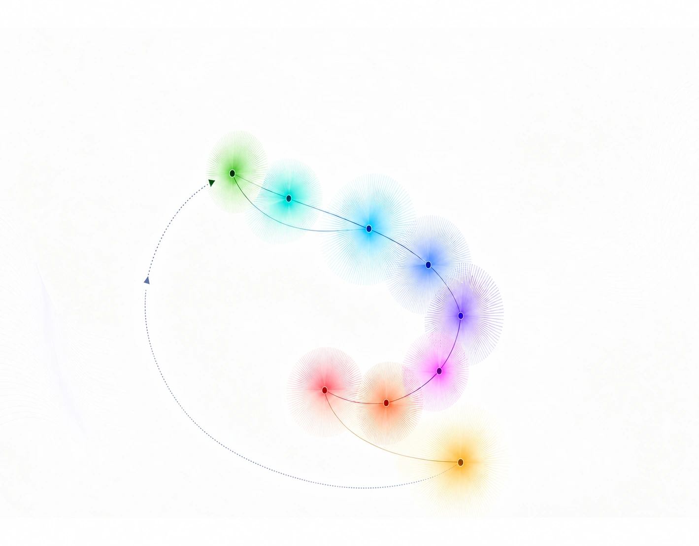
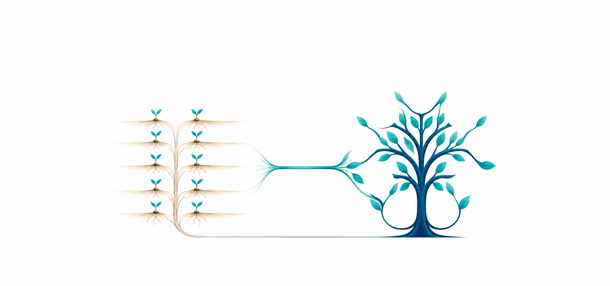

A&S Human Experience Research
How the world around us becomes perception, feeling, behavior and wellbeing.
SCIENCE OF HUMAN RESPONSE
THE SCIENTIFIC FIELDS WE ARE COMMITTED TO EXPLORING
EXPLORE OUR RESEARCH

From science platform to solutions & products
01
10 CORE RESEARCH TOPICS
02
APPLICATION · INNOVATION
03
9 SOLUTIONS & PRODUCTS